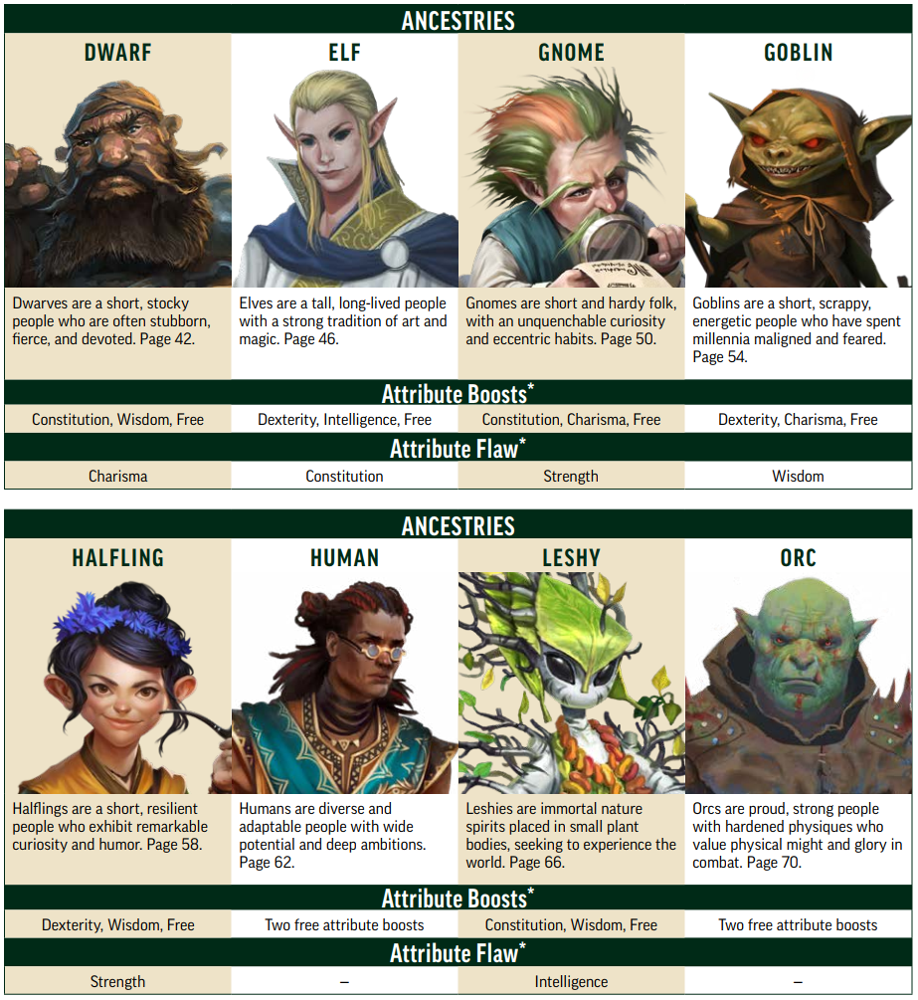
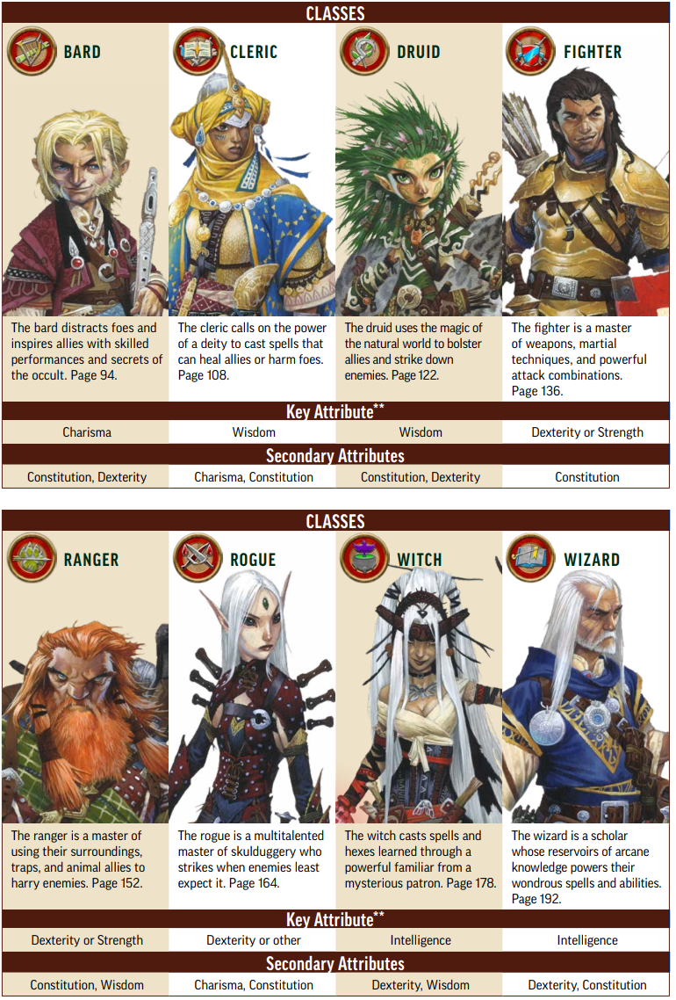
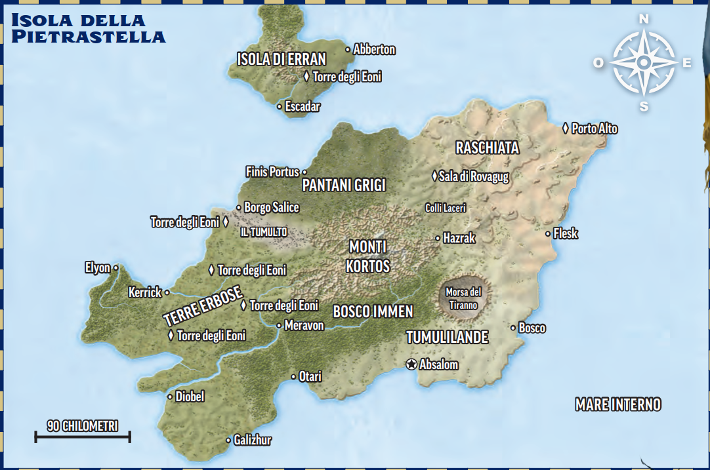
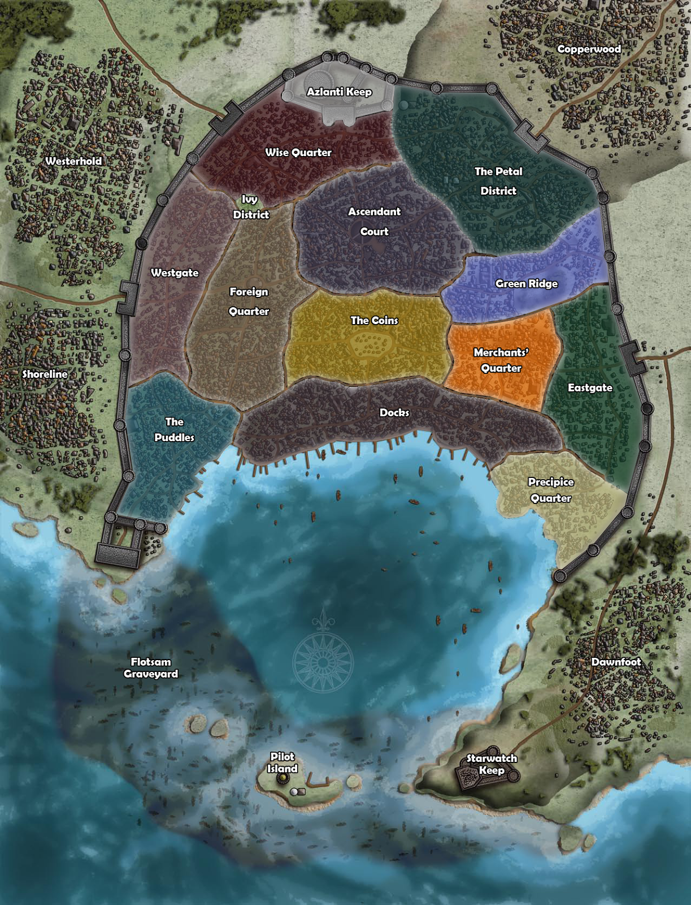
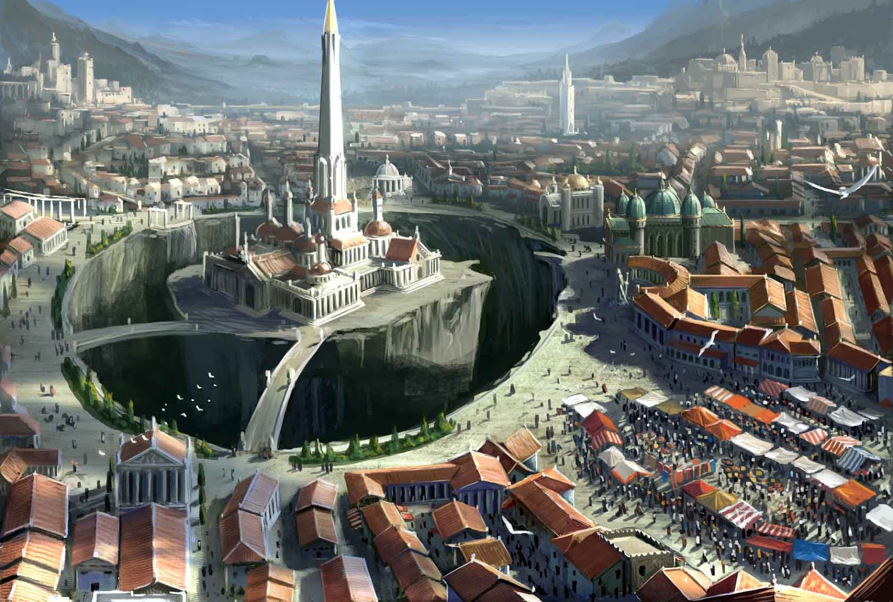

Per iniziare
Questa pagina raccoglie informazioni utili per i giocatori alle prime armi: cenni sulla storia e geografia di Golarion, le divinità principali, le stirpi disponibili e le classi giocabili in Pathfinder 2e.
Gli attributi di base
Uno degli aspetti più importanti nella creazione di un personaggio è la scelta degli attributi di base, che influenzano le capacità e le abilità del personaggio.
- Forza — misura la potenza fisica del tuo personaggio ed è importante per il combattimento in mischia. Il modificatore viene aggiunto ai danni e ai tiri per colpire in mischia. Inoltre determina il peso trasportabile.
- Destrezza — misura l'agilità, la coordinazione e i riflessi del tuo personaggio. Influisce sulla classe armatura, sui tiri per colpire a distanza, sui tiri salvezza contro effetti basati sulla destrezza e su molte abilità basate sulla destrezza.
- Costituzione — misura la resistenza fisica e la salute del tuo personaggio. Influisce sui punti ferita e sulla resistenza a malattie e veleni.
- Intelligenza — misura la capacità di apprendere e ragionare del tuo personaggio. Influisce sulle abilità basate sull'intelligenza, sulla possibilità di essere addestrati in nuove abilità e di imparare nuove lingue.
- Saggezza — misura la percezione e il buon senso del tuo personaggio. Influisce sulle abilità basate sulla saggezza e sulla difficoltà dei tiri salvezza contro incantesimi e effetti mentali.
- Carisma — misura la forza di personalità e la capacità di influenzare gli altri. Influisce sulle abilità basate sul carisma e sulla capacità di influenzare il pensiero e l'umore degli altri.
Stirpi (introduzione)
Le stirpi (ancestries) descrivono l'origine biologica e culturale del personaggio. Ogni stirpe offre tratti, talenti e opzioni uniche.

Scarica il riepilogo stirpe: Scarica immagine delle Stirpi
{kind=link}
- Nani — tozzi, robusti e legati alla terra. Spesso testardi, fieri e devoti. Bonus a costituzione e saggezza.
- Elfi — alti e dalla lunga vita, con una forte tradizione artistica e magica. Bonus a destrezza e intelligenza.
- Gnomi — bassi e resistenti, con una curiosità insaziabile e abitudini eccentriche. Bonus a costituzione e carisma.
- Goblin — piccoli e molti energici. Hanno passato millenni ad essere temuti e incompresi. Bonus a destrezza e carisma.
- Halfling — piccoli e perseveranti, con una grande curiosità e umorismo. Bonus a destrezza e saggezza.
- Umani — estremamente versatili e adattabili, con grande potenziale e ambizione. Due bonus liberi.
- Leshy — spiriti immortali della natura che si manifestano in piccole piante umanoidi, per sperimentare il mondo. Bonus a costituzione e saggezza.
- Orchi — forti e fieri, orientati al combattimento e alla sopravvivenza. Due bonus liberi.
Ogni stirpe ha heritages (varianti) e talenti che permettono di personalizzare ulteriormente il personaggio; consulta il Master per i dettagli e le opzioni consigliate.
Classi giocabili (introduzione)
Le classi definiscono il ruolo del personaggio in combattimento, nelle interazioni sociali e nelle situazioni narrative. Qui sotto trovi una breve panoramica delle classi disponibili nel nostro gruppo, con consigli per principianti.

Scarica il riepilogo classi: Scarica immagine delle Classi
{kind=link}
- Bardo — distrae gli avversari ed inspira gli alleati con esibizioni artistiche e i segreti dell'occulto.
- Chierico — richiama il potere di una divinità per lanciare incantesimi che aiutino gli alleati o danneggino gli avversari.
- Druido — usa la magia del mondo naturale per potenziare gli alleati e colpire gli avversari.
- Guerriero — maestra delle armi, delle tecniche marziali e di potenti combinazioni di attacco.
- Ranger — abile nello sfruttare l'ambiente, le trappole e gli alleati animali per contrastare gli avversari.
- Canaglia — specializzata nel sorprendere gli avversari con le molte abilità a disposizione.
- Strega — incantatrice che lancia incantesimi e maledizioni attraverso un potente famiglio di un misterioso patrono.
- Mago — profonda conoscitrice della magia, lancia mirabili incantesimi.
Per i principianti consigliamo Guerriero o Chierico per concentrarsi sulle meccaniche base. Se preferisci ruoli creativi o di supporto, prova Bardo o Ranger.
Storia e Geografia di Golarion
Le sessioni saranno ambientate nel mondo di Golarion, che trae ispirazione da miti, leggende e culture diverse. L'epoca è la tumultuosa Era dei Presagi Perduti. Per la maggior parte del tempo, profezie arcane e visioni divine hanno guidato la storia di Golarion. Aroden, dio degli uomini, sarebbe dovuto tornare su Golarion e dare inizio ad un'epoca gloriosa. Invece Aroden è morto, distruggendo l'affidabilità delle profezie. Non più guidati dal fato, ora gli abitanti di Golarion sono artefici del proprio destino.
Alcune conoscenze comuni degli abitanti di Golarion:
- Golarion è un mondo magico: le storie di potenti maghi e servitori divini sono comuni. Anche se incantatori potenti sono rari, la maggior parte dei villaggi ha qualche forma di magia locale.
- Golarion ha anche tecnologia: il concetto di armi da fuoco o di macchine è abbastanza diffuso, anche se la differenza tra tecnologia e magia non è chiaro a molte persone.
- Golarion è multiculturale: ci sono tante nazioni e culture nel globo. La possibilità di viaggiare con la magia, il commercio e le interazioni tra diverse culture sono comuni.
- Golarion è antico: la storia conosciuta risale a circa 6 millenni fa ed è solo la parte nota ai più. Questo significa che c'è sempre qualche scoperta da fare o segreto da svelare.
- Golarion è pericoloso: c'è sempre qualcosa o qualcuno che crea problemi, da banditi a draghi a nobili corrotti o tiranni. Spesso sono coraggiosi avventurieri a doversi occupare della sicurezza dei luoghi.
Golarion è un mondo ricco di storia, con continenti variegati come Avistan e Garund. Le nazioni, le città e le regioni hanno storie profonde, conflitti e leggende che influenzano le missioni.
- Mare Interno: la zona principale per molte campagne ufficiali, con città-stato e regni diversi. Comprende buona parte del continente di Avistan e il nord del Garund.
- Varie città: ogni città ha leggi, fazioni e opportunità uniche per l'avventura.
- Mappa: scarica le mappe di Golarion qui sotto per orientarti.

Per dettagli regionali usa le risorse consigliate.

Mappa del Mare Interno e aree limitrofe

{kind=link}
Isola di Kortos o della Pietrastella (Mare Interno)

{kind=link}
Mappa di Absalom e dei suoi quartieri

{kind=link}
Vista della Cattedrale della Pietrastella
Ulteriori informazioni su Kortos e Absalom
Cenni storici sull'isola della Pietrastella
Migliaia di anni dopo che il Cataclisma provocò una spaccatura continentale,
formando il Mare Interno, il leggendario eroe Aroden emerse dalle tenebre della
storia per reclamare il suo destino divino. Usando il potere arcano raccolto nel
corso dei millenni, l’ultimo sopravvissuto dell’Antico Azlant sollevò dagli abissi
del Mare Interno un cristallo ultraterreno, il cuore dell’arma che aveva distrutto la
sua patria. L’interazione con questa gemma aliena, la Pietrastella, mise alla prova
la tempra di Aroden. che riemerse da quell’esperienza come dio vivente. Immediatamente dopo, sollevò l’intera Isola di Kortos dalle profondità oceaniche e fondò
l’insediamento di Absalom nel sito della sua apoteosi, affinché fungesse da fulcro
del suo crescente culto. Chiamò l’isola Kortos: “Pietrastella” nell’antica lingua
Azlanti. Quasi cinquemila anni dopo, nonostante la morte del dio che lo fondò,
questo insediamento è cresciuto fino a diventare una delle più grandi metropoli di
Golarion, conosciuta da molti come la Città al Centro del Mondo.
Aroden si dichiarò patrono non solo degli azlanti, ma di tutta l’umanità, e richiamò i mistici di tutte le terre umane per radunarli ad Absalom e condividere i
loro segreti. I pellegrini giunsero ad Absalom da Osirion, Qadira, Taldor e oltre,
per onorare il potente re-dio della città, meravigliarsi delle sue incredibili imprese
e sforzarsi di compiere azioni fantastiche per conto proprio; molti ordini fondatori
e molte istituzioni di apprendimento esoterico continuano a far ciò ancora oggi.
Le ricchezze in rapida crescita di Absalom, e il gioiello inestimabile nel suo
cuore, attirarono più di semplici pellegrini in quei primi giorni. Sedotto da racconti lontani sull’ascensione di Aroden attraverso la Pietrastella, il signore della
guerra minotauro Voradni Voon, conquistatore del Casmaron centrale, progettò
di strappare la pietra al dio dell’umanità e prendere il suo posto tra le divinità.
Voon costruì il massiccio Portale di Bronzo sul grande altopiano orientale di Kortos, e attraverso di esso fece giungere la sua orda di minotauri, arpie e centauri
della lontana terra di Iblydos fino a Kortos, e da lì ad Absalom. L’attacco di Voon,
in seguito ricordato come Primo Assedio di Absalom, arrivò fino alle mura del
Forte Azlanti prima di essere respinto dallo stesso Aroden. L’Ultimo Azlanti ricacciò Voon e il suo esercito sull’altopiano, distruggendolo con una serie di forti
terremoti che distrussero il Portale di Bronzo e dispersero le forze del minotauro.
L’assalto di Voon fu però il primo; vari aspiranti conquistatori hanno assediato
Absalom più di 100 volte nei cinque millenni trascorsi dal primo assedio, eppure
la città non è mai caduta.
Non tutte le aspiranti divinità giunsero ad Absalom con un esercito alle spalle.
Nel corso degli anni, almeno tre umani (Norgorber nel 1893 ca, Cayden Cailean
nel 2765 ca e Iomedae nel 3832 ca) usarono mezzi più astuti per accedere alla
Cattedrale della Pietrastella e da lì ascendere alla divinità. I loro culti, così come
quelli dedicati a innumerevoli aspiranti che non hanno avuto grande successo, si
sono aggiunti ai mille credi religiosi di Absalom e i nuovi templi tentano di fare
proseliti tra chi giunge in città in cerca di verità religiose e i fanatici.
Il Tiranno Sussurrante Tar-Baphon, vecchio nemico di Aroden, è l’ultimo aspirante conquistatore di Absalom: ha lanciato un attacco a sorpresa sulla città solo
due mesi fa, durante un ardito assedio paragonabile al primo, di Voradni Voon.
Alcuni eroi avventurosi sono accorsi in difesa di Absalom, come avevano fatto
tante volte in passato, per sconfiggere il signore dei lich e rispedirlo sull’Isola del
Terrore. Gli abitanti di Absalom, tuttavia, sono certi che il Tiranno tornerà di
nuovo nei prossimi anni con un esercito di orrori non morti ancora più grande.
Città di Absalom
Absalom vanta alcuni edifici e monumenti tra i più belli e antichi di tutto il Mare
Interno. In quasi 5 millenni, la città è stata costruita e ricostruita varie volte, generando un mosaico di stili architettonici, eterogenei quanto gli innumerevoli cittadini e visitatori che affollano le strade e i mercati. Una decina di distretti si accalca
all’interno delle mura cittadine e ognuno di questi è per lo meno grande quanto
una delle capitali delle altre nazioni; ogni distretto ha al suo interno vari quartieri
e ospita intrighi che coinvolgono sia gli abitanti sia gli avventurieri in cerca di
brividi. Tra i quartieri vi sono i seguenti:
Corte dell’Ascensione
Poco dopo aver fatto emergere l’Isola di Kortos, Aroden usò il suo nuovo potere
divino per erigere la Cattedrale della Pietrastella, una stupefacente e mutevole
serie di passaggi con trappole e sale labirintiche, per scoraggiare chiunque volesse
seguire le sue orme. La cattedrale si appollaia su una cima solitaria al centro di
una fossa apparentemente senza fondo nel cuore di Absalom. Intorno alla fossa
si trovano enormi e sfarzosi templi delle grandi divinità di Golarion e gli antichi
quartieri che partono da essa, abbelliti da piccole chiese e santuari dedicati a divinità potenti ma dimenticate. Il più antico tempio di Aroden, primo del suo genere
ad Absalom, è tra i capolavori architettonici del Mare Interno. A simboleggiare la
caduta del padre fondatore di Absalom, l’edificio danneggiato dal sisma ora funge
da Ambasciata Cheliaxiana.
Distretto del Petalo
Il quartiere più ricco di tutta Absalom guarda la città dal suo trespolo, sulla Collina di Aroden. Le aiuole ammattonate sui larghi viali del distretto accolgono lussureggianti piante variopinte e conferiscono al distretto il suo nome. Le famiglie
nobili più ricche, i più potenti signori del commercio e i maestri delle gilde hanno
dei possedimenti nel Distretto del Petalo e si sforzano sempre di superarsi a vicenda con l’ostentazione delle loro proprietà. La più antica accademia di formazione
magica della città, il Collegio dei Misteri, è nascosta tra queste ricche dimore e si
rivolge in gran parte ai giovani aristocratici absalomiani. Gli irezoko, enigmatici
tatuaggi magici che coprono l’intero volto degli studenti più anziani del collegio,
nel Distretto del Petalo indicano lo status sociale, tanto quanto un abito raffinato
e lussuoso, disegnato dai maestri sarti della città.
Distretto del Precipizio
Venti anni fa, un terribile terremoto fece crollare il quartiere roccioso di Promontorio di Beldrin nel porto sottostante; caddero molte grandi strutture di un
quartiere che pareva un parco di divertimenti, pieno di padiglioni torreggianti,
piccoli musei, serragli rumorosi e manieri maestosi situati intorno alla villa a tre torri dell’arcimago Beldrin, una figura di spicco ormai morta da tempo e risalente
ai primi anni di Absalom. Sulla scia della catastrofe, il Gran Consiglio ha effettivamente abbandonato il distretto, lasciando che venisse infestato da mostri e criminali. Wynsal della Stella, capitano in pensione della Prima Guardia di Absalom,
svolge le funzioni di Primarca e ha rinunciato all’atteggiamento lassista del suo
predecessore nei confronti del distretto, per cui negli ultimi 3 anni il suo ufficio ha
sponsorizzato spedizioni volte a recuperare il quartiere. Gli sforzi hanno riscosso un certo successo, ma tra le serre e le gallerie recuperate si trovano mausolei
maledetti, cortili scolastici allagati abitati da bambini non morti, e altri orrori. La
rinascita del Distretto del Precipizio è stata avviata, ma occorrerà ancora molto
lavoro pericoloso per raggiungere il risultato.
Distretto dell’Edera
Il Distretto dell’Edera, centro artistico e culturale di Absalom, vanta splendidi
manieri, con giardini e abitanti altrettanto affascinanti. Teatri, sale per spettacoli e
sale da concerto di fama mondiale affollano le strade fiancheggiate dall’edera, che
dà il nome al quartiere, insieme a decine di altri di luoghi meno famosi. Artisti e
intrattenitori si contendono il patrocinio dei nobili e alcune scuole bardiche come
la Grotta Bianca addestrano la prossima generazione di artisti. Forse per via della
sua bellezza naturale, il Distretto dell’Edera è particolarmente popolare tra elfi e
mezzelfi.
Distretto Sapiente
La fama di Absalom come centro di apprendimento di Golarion risale ai suoi primi giorni. Famose istituzioni come la scuola arcana dell’Arcanamirium, il Museo
Blakros e la grande biblioteca di Forae Logos testimoniano la reputazione accademica di Absalom e attirano studenti bramosi di conoscenza da tutto il mondo.
Il Distretto Sapiente contiene queste istituzioni e molte altre, e i suoi ampi viali
pullulano di studenti e di istruttori. Il distretto ospita anche il governo cittadino di
Absalom, incluso l’antico e monolitico palazzo del Gran Consiglio e i tanti edifici
amministrativi ammassati che supportano la sua poderosa burocrazia.
Forte Azlanti
Lo stesso Aroden progettò ed eresse questo forte a più torri e nel corso dei secoli
il tradizionale stile azlanti antico della struttura è stato ampiamente imitato in
tutta Absalom e nella regione del Mare Interno. Il forte è il quartier generale della
Prima Guardia, l’esercito che protegge la città dalle minacce esterne. Il Gran Caveau del forte un tempo serviva da rifugio per l’intera popolazione della città nelle
situazioni di emergenza, come accadde durante il Primo Assedio, ma, per quanto
sia immensa la stanza sotterranea, la popolazione della città è ora troppo grande
perché tutti possano rifugiarvisi. Il caveau ospita anche le enormi tavolette contenenti le Prime Leggi di Absalom redatte da Aroden, come base per il suo governo
della città.
I Moli
Il brulicante lungomare di Absalom è un quartiere di taverne, topaie e magazzini
che echeggiano dei canti dei marinai, dei latrati degli scaricatori di porto e del
trambusto dei carri che trasportano merci su strade affollate. Centinaia di navi
provenienti da tutto Golarion attraccano ogni giorno nel porto di Absalom e le
mercanzie provenienti da decine di nazioni passano dai Moli, dirette ai mercati della città. Un labirinto di navi semi-affondate, chiamato Cimitero dei Relitti
Galleggianti, protegge il porto di Absalom dalle invasioni via mare, insieme ai
distaccamenti della marina cittadina e ai Cavalcaonde in sella ai loro ippocampi,
che pattugliano la Baia di Kortos e le acque intorno all’Isola di Pietrastella dalla
loro base di Escadar.
Le Monete
Gran parte dell’attività mercantile di Absalom si svolge in questo vasto dedalo di
strade affollate e mercati brulicanti. Dall’alba al tramonto, i venditori ambulanti
propongono le loro merci per clienti tutt’altro che sprovveduti, negoziando in
centinaia di lingue tra il bestiame belante, i musicisti che si esibiscono e lo stridio delle ruote dei carri sui ciottoli. Si dice che il più grande mercato della città, il Gran
Bazar, contenga quasi tutti gli oggetti che un acquirente possa desiderare, a patto
che questi passi il suo tempo a cercarli tra le centinaia di bancarelle e negozi semipermanenti della piazza. Di notte, molti dei quartieri più squallidi del distretto
diventano oasi di crimine violento, poiché borseggiatori e ladri delle Pozzanghere
e dei Moli vagano verso nord in cerca di borselli pieni di denaro.
Uno dei quartieri più pericolosi delle Monete una volta era uno dei più redditizi:
una piattaforma di pietra sopraelevata, il Viale della Miseria, centro del commercio di schiavi, ora reso fuori legge ad Absalom. Oggi il quartiere è al centro di una
baraccopoli in rovina, accuratamente evitata dalla famigerata guardia corrotta del
distretto (cinicamente chiamata Guardia Simbolica). Le squallide camere all’interno della strada rialzata, che prima era nota come Fossa degli Schiavi di Absalom,
sono oggi abitate da alcuni dei criminali più disperati e depravati della città.
Porta Orientale
A volte ci vogliono due ore o più per arrivare dalla Porta Orientale ai distretti
dall’altra parte della città, ma la maggior parte degli abitanti considera il lungo
tragitto giornaliero un costo equo da pagare pur di garantirsi la relativa sicurezza
degli accoglienti quartieri della Porta Orientale. Alcune case padronali di nobili
minori si elevano sui tetti di paglia di questo distretto, che ospita molti più operai
e artigiani che membri dell’alta società. Qui si trova anche l’enclave degli Azlanti
Inferiori di Borgo degli Uomini Pesce (il più grande nucleo cittadino di questa
antica stirpe di esseri umani acquatici), invisibile dalle strade principali, dietro una
fila di alloggi economici per guardie, lavoratori e impiegati del distretto.
Il verdeggiante quartiere di Crinale Verde della Porta Orientale ospita la Gran
Tana, l’albero più antico e più grande dell’Isola di Kortos. Questo fico a tronco
multiplo si estende per diversi isolati della città, con edifici demoliti o modificati
in considerazione della sua crescita sempre più feconda (specialmente nell’ultimo
decennio). Anche se piaghe come la Morsa del Tiranno e il Tumulto sembrano derubare Kortos della sua vitalità, la Gran Tana diventa più forte anno dopo anno.
Un culto fanatico chiamato Circolo delle Pietre si prende cura dell’albero, così
come di Iolanthe, l’immortale regina driade che abita al suo interno. La
Tana offre rifugio agli avventurieri amanti della natura come
druidi e ranger, che il culto assume per affrontare ogni
tipo di avventura progettata per favorire l’influenza di
Iolanthe in città e nella Grande Kortos.
Le Pozzanghere
Il quartiere degradato chiamato le Pozzanghere è sempre stato soggetto a inondazioni, ma nell’ultimo decennio le cose si
sono fatte sempre più disperate e l’acqua
ora copre la maggior parte delle strade
del distretto, fino all’altezza delle cosce di
un essere umano o anche più. Gli abitanti
che si rifiutano di fuggire (incluso un piccolo
gruppo che si nasconde deliberatamente dalla
guardia cittadina absalomiana) hanno iniziato a costruire ponti e rampe di fortuna tra gli edifici notoriamente affollati
del distretto, creando così una vasta e
confusa rete di vie navigabili in grado
di condurre i viaggiatori coraggiosi (e
dotati di ottimo equilibrio) da un capo
all’altro del distretto.
Quartiere Straniero
Il Quartiere Straniero di Absalom
comprende interi rioni che rispecchiano le caratteristiche di terre
lontane. Taverne, ostelli e locande affollano le strade vicine alle più grandi arterie del distretto, allettando tutti coloro
che giungono ad Absalom su strada o via mare a riposare un po’ tra simpatici
sconosciuti che chiacchierano in una sinfonia di lingue. L’attrazione principale del
distretto è l’Irorium, un immenso stadio che ospita combattimenti gladiatori, finte
battaglie navali, feste religiose, ricostruzioni storiche e altro ancora. L’Irorium, la
più grande arena all’aperto del Mare Interno, vanta numerose battaglie pubbliche
ogni giorno e i suoi gladiatori sono annoverati tra le celebrità più influenti della
città. L’imponente struttura prende il nome da Irori, il cui clero amministra un
tempio prestigioso e un collegio di combattimento nella sottostruttura dell’arena,
attraendo combattenti da ogni parte di Golarion.
Non lontano dall’arena si trova la Gran Loggia di Absalom, sede mondiale di
un’associazione di avventurieri, la Società dei Cercatori. Dietro una massiccia porta recante il Glifo della Strada Aperta si trovano sette antiche fortezze, ognuna con
la propria funzione legata agli affari globali della Società. Gli avventurieri partono
dalla Gran Loggia per missioni che li portano in giro per Kortos e anche oltre, e
tutti i Cercatori sono invitati a tornare alla Loggia ogni anno per la Grande Adunanza dell’ordine, un’occasione vivace per condividere informazioni e impegnarsi
in competizioni amichevoli.
Altre zone dell'isola
Sulla carta, Absalom ha giurisdizione sull’intera isola di Kortos, ma diverse regioni selvagge rimangono al di fuori del controllo diretto della città. Da una costa all’altra, i segni dell’estrema antichità dell’isola sono evidenti ovunque, dalle fortezze invase del Bosco Immen alle fatiscenti Torri degli Eoni delle Terre Erbose. Seguono le descrizioni di alcune località importanti di Kortos:Il bosco Immen
Il vasto bosco primordiale a nord di Absalom ha fornito legname alla città e ai suoi sudditi mentre dava riparo ai suoi nemici e ai reietti. A ovest, oltre la vivace città di Meravon (epicentro dell’attività di disboscamento dell’isola), la magia della Torre degli Eoni dell’Antica Foresta un tempo nutriva il terreno e ne sosteneva la crescita. Nei primi giorni dell’isola, gli alberi nella zona occidentale del Bosco Immen crescevano più in alto e più velocemente che altrove sull’isola, e Kortos si arricchì esportando legno verso la Qadira e la costa settentrionale garundiana. La morte di Aroden, tuttavia, indebolì la magia della torre e ora gli alberi raccolti ricrescono al loro ritmo naturale, o forse anche più lentamente, e i baroni del legname del Consorzio di Kortos sperano che i druidi riescano a riportare la foresta alla sua gloria precedente. Il Bosco Immen centrale è più vecchio e scosceso della parte periferica e tende a creare un sottobosco aggrovigliato, con le cime degli alberi intrecciate che proiettano lunghe ombre. Le estremità orientali della foresta lambiscono la Morsa del Tiranno, dove gli alberi crescono deformati e contorti dalla corruzione necromantica rimasta dalla sconfitta di Tar-Baphon, e le radure sono perseguitate da orridi non morti e da sinistri cultisti della Via Sussurrante.
Il Bosco Immen nasconde molte rovine e insediamenti perduti, insieme a diverse fortezze attive. Le colline boscose dei Monti Kortos contengono varie miniere, sia attive che non, quasi tutte abitate in un modo o in un altro. Le pattuglie della Guarnigione dell’Aquila della Prima Guardia percorrono i sentieri che collegano gli insediamenti della foresta, che spesso cadono in preda ai fuorilegge. Le tribù di centauri che abitano nella foresta sono più ospitali di quelle violente e xenofobe della Raschiata, ma negli ultimi anni hanno sofferto terribilmente per mano di Absalom e le tensioni rimangono elevate.
Diobel
La cosiddetta “Porta sul Retro di Absalom” poggia su un’ampia passerella di legno alla fine di un porto poco profondo, sulla costa sud-occidentale dell’isola. Varie chiatte zeppe di carico scivolano su fondali ricchi di ostriche tra la vivace città commerciale e lo Strascico, un labirinto di ripide pareti di pietra incrostate di alghe, cirripedi e piccoli molluschi. Tutto il traffico commerciale che attraversa lo Strascico rientra nell’attento controllo del Consorzio di Kortos, un’associazione di gilde e signori del commercio che controllano le considerevoli attività di estrazione mineraria, agricoltura, caccia, pesca e raccolta delle ostriche di tutta l’isola e amministrano i numerosi e fiorenti mercati di Diobel. Tutti sanno che il Consorzio controlla anche il traffico di merci illegali, che clandestinamente entrano ed escono da Absalom su strada senza essere controllate dalle guardie del porto. La corruzione del Consorzio fa di Diobel un focolaio di intrighi politici contro i potenti di Absalom e crea un’atmosfera caotica; benché il gruppo mantenga tutto sotto controllo, c’è la sensazione che questo stato di cose possa crollare da un momento all’altro.
Monti Kortos
Le svettanti montagne del centro di Kortos si stagliano sullo sfondo del paesaggio di Absalom quando si osserva la città dal mare; i marinai e gli isolani le chiamano il Faro di Absalom, la Torre Blu della Porta Orientale e la Guglia di Nex. Diverse alte montagne, alcune ricoperte di neve e ghiaccio, creano sagome talmente caratteristiche, stagliandosi contro il cielo, da risultare culturalmente significative anche per la gente che non lascia mai Absalom. Tra le più importanti ci sono il Monte Ganog, Arazlant Mox e il Nonno Piangente, ognuna delle quali ha le sue leggende, le sue canzoni da taverna e il suo folklore. Fenditure tortuose e creste affilate rendono il viaggio attraverso la regione un’ardua impresa, per non parlare delle malvagie arpie che si appostano in vallate isolate e rozzi villaggi ai margini del limite degli alberi, o dei drachi, delle viverne e dei draghi che si nascondono vicino alle cime rocciose.
Morsa del Tiranno
Il sito della sconfitta del Tiranno Sussurrante è un deserto devastato dalla corruzione necromantica che si estende per quasi 30 chilometri attraverso le pianure, la foresta e le colline a nord-est della Guglia di Nex. Il lich apparentemente perì in una tremenda esplosione di energia magica che strappò la mano destra del non morto dal suo polso ossuto, e la mano scheletrica rimane lì, riluttante a sciogliere la presa sull’Isola di Kortos. I cultisti della Via Sussurrante affollano questa terra contaminata, che considerano come la base più probabile per l’inevitabile ritorno del loro signore, che giungerà a reclamare la sua mano e la Pietrastella. La Prima Guardia ha annientato tre tentativi di insediamento da parte di questi oscuri fanatici, ma il loro numero sembra aumentare. Le creature non morte, che sono sempre una potenziale minaccia nelle Tumulilande, sono notevolmente più numerose in questa regione. I non morti che si trovano dentro la Morsa del Tiranno ottengono la capacità di individuare le creature viventi come un senso impreciso entro un raggio di 9 metri. Ottengono anche resistenza all’energia positiva pari al loro livello.
Pantani Grigi
A nord dei Monti Kortos, l’isola scende verso il mare e le pianure centrali affondano nei Pantani Grigi, vasta palude avvolta in una nebbia fitta, che arriva alle ginocchia di un essere umano. Il miasma nasconde ogni sorta di sudiciume e malattie: enclave isolate di coboldi, lucertoloidi, streghe e criminali emarginati si celano sotto la sua coltre. La Guarnigione dell’Aquila della Prima Guardia molto tempo fa cedette alle terre selvagge i Pantani Grigi, che in tal modo si ritrovarono fuori dalla giurisdizione di Absalom. Uno squallido paesino chiamato Finis Portus si trova sulla costa, col suo molo profondo, e offre traghetti economici per Escadar a quei pochi viaggiatori dell’isola che riescono a sopravvivere al viaggio nella palude.
La Raschiata
Quando l’Arco di Bronzo di Voradni Voon prese vita come portale magico al centro dell’altopiano orientale dell’isola, il signore della guerra chiamò i suoi eserciti da un continente lontano e un’orda apparentemente infinita di minotauri, arpie e centauri irruppe sull’Isola di Kortos. L’altopiano risuonò degli zoccoli di diecimila centauri, e intere tribù giunsero per scatenare un terribile terremoto su Absalom, proprio come avevano causato sconvolgimenti in tante antiche città del Casmaron. Aroden invertì la magia sismica contro di loro, uccidendo Voradni Voon e frantumando l’Arco di Bronzo in una dozzina di frammenti. Innumerevoli centauri caddero in profonde fratture mentre il paesaggio si spezzava, ribollendo per la violenta devastazione. Dopo la distruzione dell’Arco di Bronzo, l’altopiano orientale cominciò a essere chiamato Raschiata. La maggior parte dei minotauri sopravvissuti fuggì sui Colli Laceri, da dove ancor oggi partono gli assalti contro Absalom e i suoi alleati, precisamente dall’insediamento di Hazrak. Le arpie selvagge di Voon, ultime a rinunciare alla lotta, fuggirono sugli altopiani dei Monti Kortos e nel corso dei secoli le loro usanze non si sono affatto ammorbidite.
Terre erbose
Kortos deve la sua ricchezza non solo ai fertili campi delle sue zone occidentali, ma anche alle enormi Torri degli Eoni e ai loro globi degli eoni, che hanno magicamente sostenuto la sua flora fin dall’antichità. Una decina di anni fa, alcuni gruppi ignoti hanno rubato il globo degli eoni vicino a Borgo Salice, riducendo la sua torre a un cenotafio fatiscente, incapace di trattenere una strana devastazione ambientale nota come Tumulto, che dal bordo occidentale dei Pantani Grigi cresce di quasi due chilometri l’anno. La Torre dell’Antica Foresta vicino al paese di Meravon, famoso per il legname, un tempo garantiva la salute e la ricrescita del Bosco Immen occidentale, ma i suoi poteri diventano sempre più deboli a ogni stagione. Le altre tre Torri degli Eoni al momento funzionano ancora, ma i loro guardiani sembrano inquieti e si chiedono per quanto tempo potranno resistere, insieme alla famosa prosperità agricola di Kortos.
Tumulilande
La sterile terra deserta che circonda Absalom è disseminata di decine di castelli d’assedio, testimonianze di cinque millenni di invasioni fallite, le cui sale dimenticate ospitano mostri, briganti e morti inquieti. Le fortezze variano in dimensioni: dalla Guglia di Nex, alta quasi duemila metri, 18 chilometri a nord della città, alla fatiscente Piramide del Cane, appena fuori dalle Pozzanghere. Le voci stuzzicanti su sale ancora da scoprire e tesori non ancora reclamati in castelli d’assedio appena oltre le mura della città invitano gli avventurieri a esplorare le loro oscure profondità.
L’Isola di Erran
Sin dai primi giorni, l’Isola di Erran era un luogo precluso ai mortali, tenuto come sacro rifugio personale per Aroden e i suoi devoti più fidati. Si dice che Erran custodisca più segreti di tutti i volumi delle Cronache dei Cercatori messi insieme, poiché le foreste settentrionali dell’isola contengono centinaia di tombe e monoliti non correlati ad Aroden o alla sua religione. La flotta di Absalom scopre spesso queste rovine mentre abbatte alcune sezioni delle foreste per ottenere legname per la costruzione di navi, e spesso assume degli avventurieri per esplorare queste strane scoperte.
Nei tempi antichi, Escadar ospitava un importante monastero di Aroden chiamato San Sarnax, l’accademia di addestramento e la biblioteca esoterica dei Cavalieri della Stella degli Eoni (un ordine di maghi-guerrieri consacrati che accompagnavano Aroden nei giorni incerti prima della sua ascensione). Sebbene le coste a nord dell’isola siano rimaste riservate all’uso personale ed esclusivo di Aroden, anche secoli dopo la sua ultima apparizione ad Absalom, San Sarnax e la sua piccola comunità portuale sono aperti al clero di Aroden e ricevono molte visite di pellegrini interessati a consultare antichi manoscritti azlanti non registrati nella biblioteca Forae Logos di Absalom. Oggi rimangono solo tre anziani Cavalieri della Stella degli Eoni a custodire San Sarnax, ma il monastero di marmo bianco continua a splendere sulle coste meridionali di Escadar, come ai tempi di Aroden. Cinque secoli fa, Absalom fortificò il porto di San Sarnax come quartier generale della potente flotta cittadina, chiamando Escadar questo insediamento ampliato, in onore di un eroe dell’Assedio dei Pirati. Decine di navi da guerra affollano il porto di Escadar, da cui partono in missioni regolari per scortare navi mercantili, cacciare i pirati o pattugliare le vicine rotte marittime. Quando sono in porto, i marinai si aggirano tra le numerose caserme, i bar, le sale da gioco e le case dell’oppio di Escadar. Il paese ospita anche la Casa dell’Onda di Cresta, un’ambasciata degli Azlanti Inferiori, che recuperano tesori dal mare per poi impegnarli nei modesti mercati pubblici della città.
Divinità (cenni)
Le divinità in Pathfinder hanno influenza culturale, magica e narrativa. Anche se non giochi un chierico o un paladino, conoscere le divinità aiuta a definire retroscena e motivazioni.
- Desna — dea dei viaggi, dei sogni e delle stelle. Ideale per personaggi itineranti, ladri e avventurieri che amano libertà e speranza.
- Erastil — protettore della comunità rurale, caccia e famiglia. Spesso venerato da ranger, cacciatori e contadini.
- Gorum — dio della guerra, del conflitto e della forza bruta. Adatto a barbari e guerrieri che cercano gloria in battaglia.
- Iomedae — dea dell'onore, della giustizia e degli eroi. Patrono tipico di paladini e cavalieri.
- Desna, Erastil, Gorum, Iomedae sono solo esempi: Golarion ospita centinaia di divinità e culti locali che possono colorare il background del tuo personaggio.
Quando scegli una divinità, rifletti su come le sue esigenze e valori influenzano le scelte del tuo personaggio e la relazione con il gruppo.
Tutorial passo-passo: creare la prima scheda
- Scegli un concetto: che tipo di personaggio vuoi interpretare? Può essere un concetto semplice o complesso, ma ti darà un'idea di massima su come proseguire. Parlane con il Master o con gli altri giocatori. Magari i personaggi potrebbero essere legati in qualche modo? Rivali? Amici? Parenti?
- Scegli la stirpe: leggi il riepilogo stirpe e scegli quella che si adatta al concetto (forza fisica, magia, supporto).
- Scegli la classe: seleziona il ruolo desiderato (tank, supporto, DPS, utility) e consulta il PDF classi per abilità iniziali.
- Scegli background e divinità: questo definisce competenze extra, lingue e motivazioni.
- Imposta i modificatori per i sei attributi: Ognuno dei modificatori inizia a +0, valore medio. I modificatori vengono poi cambiati dalla stirpe, classe e background scelto. Infine, vanno applicati 4 aumenti liberi.
- Seleziona talenti e abilità: segui le opzioni iniziali della classe; per i principianti preferisci scelte semplici e efficaci.
- Equipaggiamento: prendi armi/armature coerenti con la classe e il ruolo; non complicare troppo l'inventario all'inizio.
- Editti e anatemi: l'allineamento non è più utilizzato. Ogni personaggio ha un suo codice di condotta o filosofia di comportamento. Puoi prendere ispirazione dalla tua stirpe o divinità. Possono cambiare durante le sessioni se appropriato. Vedi sotto per alcuni esempi.
- Età: scegli quanti anni ha il tuo personaggio. Non ci sono limiti rigidi, ma considera l'esperienza e la maturità del personaggio, rispetto anche alla vita media della stirpe scelta.
- CD della classe: identifica la Classe di Difficoltà (CD) per le prove di abilità e tiri salvezza che gli avversari devono superare rispetto al tuo personaggio. Di norma è 10 + modificatore di competenza + modificatore di attributo rilevante.
- Punti eroe: di solito ne hai uno all'inizio di ogni sessione e puoi guadagnare un altro per imprese eroiche o strategie intelligenti. I punti eroe sono utili per evitare la morte o per ritirare il d20.
- Classe Armatura (CA): rappresenta quanto è difficile colpire il personaggio in combattimento. Il valore è 10 + modificatore di Destrezza + modificatore di competenza + eventuali bonus da armature o scudi o altri oggetti.
- Ingombro: indica quanto peso può trasportare il personaggio senza penalità. Se trasporta più di 5 volte il modificatore di Forza, subisce penalità. Impossibile portare più di 10 volte il modificatore di Forza.
- Compila la scheda: usa la scheda PDF editabile disponibile nella sezione Documenti e salva una copia su Google Drive o localmente.
- Condividi con il Master: invia link della scheda al GM o caricala nello spazio della campagna.
- Gioca e impara: il primo gioco serve per capire le meccaniche; non aver paura di chiedere aiuto al Master o agli altri giocatori.
Alcuni esempi di editti e anatemi popolari per caratterizzare il codice di condotta del personaggio
Coboldi
Editti: trova il tuo posto in qualsiasi struttura di potere, sii orgoglioso della forza dei tuoi alleati, vinci con l'ingegno.
Anatemi: affronta una minaccia da solo, getta la prudenza al vento.
Elfi
Editti: trova la bellezza nella natura e nell'arte, esplora cose che altri terrebbero nascoste, dimostra la superiorità sul tuo rivale.
Anatemi: abbandona il tuo percorso di vita, costringi un'altra creatura a fare qualcosa.
Felinidi
Editti: viaggia per il mondo, proteggi i luoghi naturali, mantieni meticolosamente il tuo aspetto.
Anatemi: lascia domande senza risposta.
Gnomi
Editti: cerca nuove esperienze, abbraccia la tua ispirazione, passa da un'ossessione all'altra.
Anatemi: rallenta per spiegarti, priva qualcuno di ogni stimolo.
Goblin
Editti: inventa canzoni per ogni occasione, trasforma la spazzatura in tesori, risolvi i problemi con il fuoco.
Anatemi: fidati di un cane o di un cavallo, impara a leggere.
Halfling
Editti: condividi buoni pasti con amici e sconosciuti, affronta i bulli e gli oppressori, non attirare l'attenzione delle gente alta.
Anatemi: dai per scontata la tua fortuna.
Kitsune
Editti: mantieni un equilibrio tra le tue molteplici nature, usa l'inganno con saggezza, proteggi coloro che ti sono cari.
Anatemi: risolvi i problemi con la forza, essere troppo diretto o onesto.
Leshy
Editti: sperimenta il mondo fisico, forma una famiglia attraverso la lealtà e la fiducia, proteggi le parti della natura che si incarnano.
Anatemi: abbraccia la magia o le influenze soprannaturali.
Lucertoloidi
Editti: mantieni vivi i ricordi del passato, attendi la tua preda, adatta i tuoi piani all'ambiente.
Anatemi: sfida la volontà delle stelle.
Nani
Editti: crea arte con utilità pratica, proteggi la tua comunità da coloro che la danneggerebbero, tieni al sicuro il pugnale del clan.
Anatemi: lascia un'attività o una promessa incompiuta, rinnega la tua famiglia.
Orchi
Editti: diventa ancora più forte, condividi la conoscenza acquisita attraverso il dolore, distruggi i non morti.
Anatemi: accetta la sconfitta senza prova di forza, rimodella o rianima una creatura in qualcosa di inferiore.
Umani
Editti: esplora il mondo, aspira alla grandezza, dedicati a una visione morale.
Anatemi: spreca il poco tempo che hai.
FAQ
Ho bisogno di pagare per partecipare?
No, è tutto gratuito!
Quale classe è la più semplice?
Guerriero e Chierico sono le classi più semplici per iniziare: il guerriero insegna il combattimento, il chierico introduce magia di supporto.
Posso modificare la scheda dopo la creazione?
Sì, nessun problema. Puoi anche cambiare totalmente il personaggio se non ti trovi bene. Parla con il Master per eventuali ritocchi o cambi di background. Alcune modifiche in partita potrebbero richiedere consenso del GM.
Come condivido il file Drive correttamente?
Imposta il file Drive su "Chiunque abbia il link" in modalità visualizzazione o condividilo direttamente con il Master.
Risorse utili
- SRD Pathfinder 2e (AONPRD) — regole base e riferimenti.
- SRD in italiano - Attenzione, regole non aggiornate a Remaster! Utile per informazioni generali
- Documenti - Schede personaggio PDF editabili e schede di esempio
- PathBuilder - Costruzione guidata alla creazione della scheda del personaggio (in inglese)
- Chat - Gruppo WhatsApp della Gilda per domande rapide.